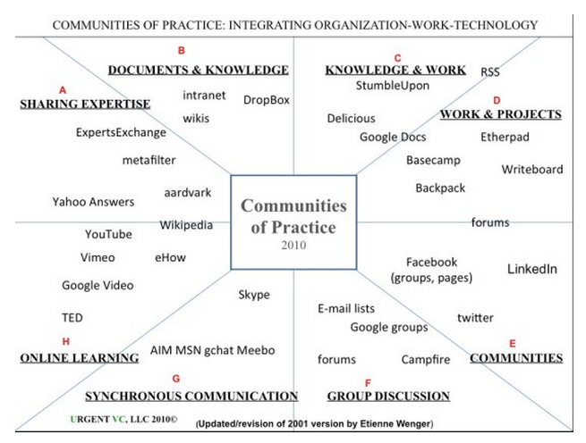

4.6 Comunidades de prática

Imagem: © Belfast Telegraph, 2014

4.6.1 As teorias por trás das comunidades de prática
O design do ensino frequentemente integra diferentes teorias de aprendizagem. As comunidades de prática são uma das formas pelas quais a aprendizagem experiencial, o construtivismo social e o conectivismo podem ser combinados, ilustrando as limitações de tentar classificar rigidamente as teorias de aprendizagem. A prática tende a ser mais complexa.
4.6.2 O que são comunidades de prática?
4.6.2.1 Definição:
Comunidades de prática são grupos de pessoas que compartilham uma preocupação ou uma paixão por algo que fazem e aprendem a fazê-lo melhor à medida que interagem regularmente.
Wenger, 2014
4.6.2.2 O que são comunidades de prática?
A premissa básica por trás das comunidades de prática é simples: todos nós aprendemos no dia a dia com as comunidades nas quais nos encontramos. As comunidades de prática estão em toda parte. Quase todo mundo pertence a alguma comunidade de prática, seja por meio de nossos colegas ou associados de trabalho, de nossa profissão ou ofício, ou de nossos interesses de lazer, como um clube de leitura. Wenger (2000) argumenta que uma comunidade de prática difere de uma comunidade de interesse ou de uma comunidade geográfica porque envolve uma prática compartilhada: formas de fazer as coisas que são compartilhadas em grau significativo entre os membros.
4.6.2.3 Características
Wenger argumenta que existem três características cruciais em uma comunidade de prática:
- domínio: um interesse comum que conecta e mantém a comunidade unida;
- comunidade: uma comunidade é delimitada pelas atividades compartilhadas que realizam (por exemplo, reuniões, discussões) em torno de seu domínio comum;
- prática: os membros de uma comunidade de prática são profissionais ativos (practitioners); o que eles fazem orienta a sua participação na comunidade, e o que aprendem na comunidade afeta o que fazem na prática.
4.6.2.4 Inovação e mudança
Wenger (2000) argumentou que, embora os indivíduos aprendam por meio da participação em uma comunidade de prática, o mais importante é a geração de níveis de conhecimento mais novos ou profundos por meio da soma da atividade do grupo. Se a comunidade de prática estiver centrada em processos de negócios, por exemplo, isso pode trazer benefícios consideráveis para uma organização. Smith (2003) observa que:
...as comunidades de prática afetam o desempenho... [Isso] é importante em parte devido ao seu potencial para superar os problemas inerentes a uma hierarquia tradicional de movimento lento em uma economia virtual de movimento rápido. As comunidades também parecem ser uma forma eficaz de as organizações lidarem com problemas não estruturados e compartilharem conhecimento fora dos limites estruturais tradicionais. Além disso, o conceito de comunidade é reconhecido como um meio de desenvolver e manter a memória organizacional de longo prazo.
Brown e Duguid (2000) descrevem uma comunidade de prática desenvolvida em torno dos representantes de atendimento ao cliente da Xerox que consertavam as máquinas em campo. Os representantes começaram a trocar dicas e truques em encontros informais no café da manhã ou no almoço e, finalmente, a Xerox percebeu o valor dessas interações e criou o projeto Eureka para permitir que essas interações fossem compartilhadas em toda a rede global de representantes. Estima-se que o banco de dados Eureka tenha poupado à corporação 100 milhões de dólares. Empresas como Google e Apple estão incentivando comunidades de prática através do compartilhamento de conhecimento entre seus muitos colaboradores especializados.
4.6.2.5 Tecnologias
A tecnologia fornece uma ampla gama de ferramentas que podem apoiar as comunidades de prática, conforme indicado por Wenger (2014) no diagrama abaixo:


Imagem: Wenger, 2014

4.6.3 Projetando comunidades de prática eficazes
A maioria das comunidades de prática não possui um design formal e tende a ser formada por sistemas auto-organizáveis. Elas têm um ciclo de vida natural e chegam ao fim quando não atendem mais às necessidades da comunidade. No entanto, existe agora um conjunto de teorias e pesquisas que identificaram ações que podem ajudar a sustentar e melhorar a eficácia das comunidades de prática.
Wenger, McDermott e Snyder (2002) identificaram sete princípios fundamentais de design para criar comunidades de prática eficazes e autossustentáveis, relacionados especificamente à gestão da comunidade, embora o sucesso final de uma comunidade de prática seja determinado pelas atividades dos próprios membros da comunidade. Os designers de uma comunidade de prática precisam:
4.6.3.1 Projetar para a evolução
Garantir que a comunidade possa evoluir e mudar de foco para atender aos interesses dos participantes sem se afastar muito do domínio de interesse comum.
4.6.3.2 Abrir um diálogo entre as perspectivas interna e externa
Incentivar a introdução e a discussão de novas perspectivas que venham ou sejam trazidas de fora da comunidade de prática.
4.6.3.3 Incentivar e aceitar diferentes níveis de participação
Diferentes níveis de participação incluem:
- o “núcleo” (membros mais ativos),
- aqueles que participam regularmente, mas não assumem um papel de liderança em contribuições ativas,
- aqueles (provavelmente a maioria) que estão na periferia da comunidade, mas podem tornar-se participantes mais ativos se as atividades ou discussões começarem a engajá-los de forma mais completa.
4.6.3.4 Desenvolver espaços comunitários públicos e privados
As comunidades de prática são fortalecidas se incentivarem atividades individuais ou de grupo mais pessoais ou privadas, bem como as discussões gerais mais públicas; por exemplo, os indivíduos podem decidir escrever em blogs sobre as suas atividades, ou um pequeno grupo em uma comunidade on-line que viva ou trabalhe próximo pode decidir se encontrar informalmente de forma presencial.
4.6.3.5 Focar no valor
Devem ser feitas tentativas explícitas de identificar, através de feedback e discussão, as contribuições que a comunidade mais valoriza.
4.6.3.6 Combinar familiaridade e entusiasmo
Concentrar-se tanto nas preocupações e perspectivas compartilhadas e comuns, quanto na introdução de perspectivas radicais ou desafiadoras para discussão ou ação.
4.6.3.7 Criar um ritmo para a comunidade
É necessário haver um cronograma regular de atividades ou pontos focais que reúnam os participantes em uma base regular, dentro das restrições de tempo e interesses dos participantes.
4.6.4 Fatores críticos de sucesso
Pesquisas subsequentes identificaram vários fatores críticos que influenciam a eficácia dos participantes em comunidades de prática. Estes incluem estar:
- ciente da presença social: os indivíduos precisam se sentir confortáveis em interagir socialmente com outros profissionais ou “especialistas” no domínio, e aqueles com maior conhecimento devem estar dispostos a compartilhar de forma colegiada, respeitando as opiniões e conhecimentos de outros participantes (a presença social é definida como a consciência dos outros em uma interação combinada com uma apreciação dos aspectos interpessoais dessa interação.)
- motivado a compartilhar informações para o bem comum da comunidade
- capaz e disposto a colaborar.
A EDUCAUSE desenvolveu um guia passo a passo para planejar e cultivar comunidades de prática no ensino superior (Cambridge, Kaplan e Suter, 2005).
Por fim, pesquisas sobre outros setores relacionados, tais como a aprendizagem colaborativa ou os MOOCs, podem orientar a concepção e o desenvolvimento de comunidades de prática. Por exemplo, as comunidades de prática precisam equilibrar a estrutura e o caos: muita estrutura e muitos participantes provavelmente se sentirão limitados no que precisam de discutir; pouca estrutura e os participantes podem perder rapidamente o interesse ou se sentirem sobrecarregados.
Muitas das outras descobertas sobre o comportamento de grupo e on-line, tais como a necessidade de respeitar os outros, observar a etiqueta on-line e evitar que certos indivíduos dominem a discussão, são passíveis de aplicação. No entanto, como muitas comunidades de prática são, por definição, autorreguladas, estabelecer regras de conduta e, mais ainda, aplicá-las, é na verdade uma responsabilidade dos próprios participantes.
4.6.5 Aprendizagem por meio de comunidades de prática na era digital
As comunidades de prática são uma manifestação poderosa da aprendizagem informal. Geralmente evoluem naturalmente para abordar interesses e problemas comumente compartilhados. Pela sua natureza, tendem a existir fora das organizações educacionais formais. Os participantes não procuram normalmente qualificações formais, mas sim resolver problemas em suas vidas e serem melhores no que fazem. Além disso, as comunidades de prática não dependem de nenhuma mídia específica; os participantes podem encontrar-se presencialmente de forma social ou no trabalho, ou podem participar em comunidades de prática on-line ou virtuais.
Deve-se notar que as comunidades de prática podem ser muito eficazes em um mundo digital, onde o contexto de trabalho é volátil, complexo, incerto e ambíguo. Grande parte do mercado da aprendizagem ao longo da vida passará a ser ocupada por comunidades de prática e autoaprendizagem, através da aprendizagem colaborativa, da partilha de conhecimentos e experiências e do crowdsourcing de novas ideias e desenvolvimento. Essa oferta de aprendizagem informal será particularmente valiosa para organizações não governamentais ou de caridade, como a Cruz Vermelha, o Greenpeace ou a UNICEF, ou governos locais que procurem formas de envolver as comunidades nas suas áreas de atuação.
Estas comunidades de aprendizes serão abertas e gratuitas e, portanto, constituirão uma alternativa competitiva aos programas de aprendizagem ao longo da vida de custo elevado oferecidos pelas universidades de pesquisa. Isto pressionará as universidades e faculdades a oferecerem modalidades mais flexíveis de reconhecimento da aprendizagem informal, a fim de manterem o seu atual monopólio da acreditação do ensino superior.
Um dos desenvolvimentos significativos nos últimos anos tem sido o uso de cursos on-line abertos e massivos (MOOCs) para o desenvolvimento de comunidades de prática on-line. Os MOOCs são discutidos em mais detalhes no Capítulo 5, mas vale a pena discutir aqui a ligação entre os MOOCs e as comunidades de prática. Os xMOOCs, de caráter mais instrucionista, não são propriamente desenvolvidos como comunidades de prática, porque utilizam principalmente uma pedagogia transmissiva, dos especialistas para os considerados menos experientes.
Em comparação, os MOOCs conectivistas são uma forma ideal de reunir especialistas espalhados pelo mundo para se concentrarem em um interesse ou domínio comum. Os MOOCs conectivistas estão muito mais próximos de serem comunidades de prática virtuais, no sentido de que colocam muito mais ênfase na partilha de conhecimentos entre participantes mais ou menos iguais. No entanto, os atuais MOOCs conectivistas nem sempre incorporam aquilo que a pesquisa indica serem as boas práticas para o desenvolvimento de comunidades de prática, e aqueles que pretendem estabelecer uma comunidade de prática virtual no momento necessitam de algum tipo de fornecedor de MOOC para começar e dar-lhes acesso ao software de MOOC necessário.
Embora as comunidades de prática tendam a tornar-se mais e não menos importantes na era digital, é provavelmente um erro considerá-las como um substituto das formas tradicionais de educação. Não existe uma abordagem única e “correta” para o design de ensino. Grupos diferentes têm necessidades diferentes. As comunidades de prática constituem mais uma alternativa para determinados tipos de aprendizes, tais como os aprendizes ao longo da vida, e têm maior probabilidade de funcionar melhor quando os participantes já possuem algum conhecimento do domínio e podem contribuir de forma pessoal e construtiva — o que sugere a necessidade de pelo menos alguma forma de educação geral ou formação prévia para aqueles que participam em comunidades de prática eficazes.
Em conclusão, é claro que, em um mundo cada vez mais volátil, incerto, complexo e ambíguo, e dada a abertura da internet, as ferramentas de mídias sociais agora disponíveis e a necessidade de partilha de conhecimento a escala global, as comunidades de prática virtuais tornar-se-ão ainda mais comuns e importantes. Educadores e formadores inteligentes procurarão ver como podem aproveitar a força deste modelo de design, especialmente para a aprendizagem ao longo da vida. Contudo, a simples aglomeração de um grande número de pessoas com um interesse comum dificilmente conduzirá a uma aprendizagem eficaz. Precisa ser dedicada atenção aos princípios de design que levam a comunidades de prática eficazes.
Referências
Brown, J. and Duguid, P. (2000) Balancing act: How to capture knowledge without killing it Harvard Business Review.
Cambridge, D., Kaplan, S. and Suter, V. (2005) Community of Practice Design Guide Louisville CO: EDUCAUSE
Smith, M. K. (2003) ‘Communities of practice’, the encyclopedia of informal education, consultado em 26 de setembro de 2014, não mais disponível
Wenger, E. (2000)Communities of Practice: Learning, Meaning and Identity Cambridge UK: Cambridge University Press
Wenger, E. (2014) Communities of practice: a brief introduction, consultado em 5 de outubro de 2019
Wenger, E, McDermott, R., and Snyder, W. (2002). Cultivating Communities of Practice (Hardcover). Harvard Business Press; 1 edition.
Atualização e leituras adicionais
Wenger, E., Trayner, B. and de Laat, M. (2011)Promoting and assessing value creation in communities and networks: a conceptual framework Heerlen NL: The Open University of the Netherlands
Este documento apresenta uma base conceitual para promover e avaliar a criação de valor em comunidades e redes. Por criação de valor entende-se o valor da aprendizagem possibilitada pelo envolvimento na comunidade e pelo trabalho em rede.
Para uma crítica interessante a este artigo, consulte:
Dingyloudi, F. and Strijbos, J. (2015) Examining value creation in a community of learning practice: Methodological reflections on story-telling and story-reading Seminar.net, Vol. 11, No.3
Atividade 4.6 Fazendo as comunidades de prática funcionarem
1. Você consegue identificar uma comunidade de prática a que pertence? Ela é bem-sucedida e atende aos princípios de design descritos acima?
2. Consegue pensar em uma maneira de desenvolver uma comunidade de prática que apoiasse seu trabalho como professor?
3. Existe algo de especial que você precisaria fazer para que uma comunidade de prática on-line funcionasse e que não seria necessário em uma comunidade presencial?
Para minhas reflexões sobre estas questões, clique no podcast abaixo.
Um elemento de áudio foi excluído desta versão do texto. Você pode ouvi-lo on-line aqui: https://pressbooks.bccampus.ca/teachinginadigitalagev2/?p=134